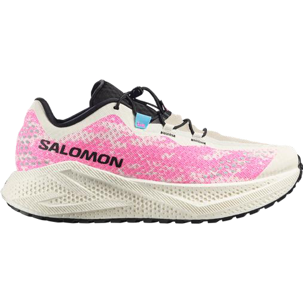
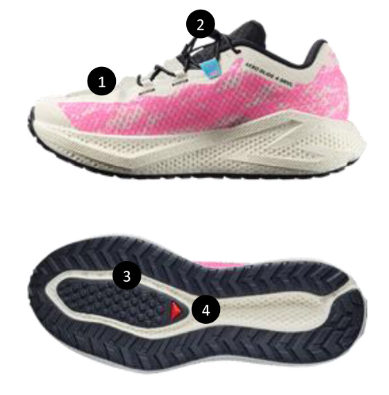
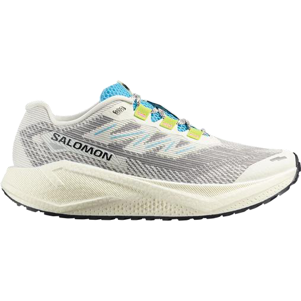
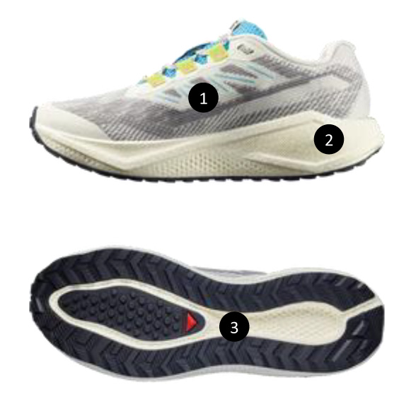

Road feeling
Gravel should keep the cushioned road sensation the runner already likes, rather than forcing them straight into a full trail-shoe experience.
![Salomon logo](data:image/svg+xml,%3c?xml%20version='1.0'%20encoding='UTF-8'?%3e%3csvg%20id='Layer_2'%20xmlns='http://www.w3.org/2000/svg'%20width='1825.87'%20height='203.3'%20viewBox='0%200%201825.87%20203.3'%3e%3cdefs%3e%3cstyle%3e.cls-1{fill:%23fff;}%3c/style%3e%3c/defs%3e%3cg%20id='Layer_1-2'%3e%3cpath%20class='cls-1'%20d='M332.26,2.3l-106.63,199h71.84l16.89-36h78.38l6.69,36h71.83L430.1,2.3h-97.84ZM375.67,42.3h.59l13.35,84h-58.07l44.13-84Z'/%3e%3cpolygon%20class='cls-1'%20points='520.84%202.3%20489.97%20201.3%20660.53%20201.3%20667.63%20153.3%20565.83%20153.3%20589.64%202.3%20520.84%202.3'/%3e%3cpolygon%20class='cls-1'%20points='1168.84%202.3%201103%20151.3%201102.44%20151.3%201084.11%202.3%20996.2%202.3%20919.88%20201.3%20987.12%20201.3%201037.34%2057.3%201037.9%2057.3%201053.84%20201.3%201135.35%20201.3%201197.23%2061.3%201197.86%2061.3%201208.16%20201.3%201277.02%20201.3%201259.02%202.3%201168.84%202.3'/%3e%3cpolygon%20class='cls-1'%20points='1763.74%202.3%201740.34%20148.3%201739.77%20148.3%201674.31%202.3%201581.26%202.3%201550.34%20201.3%201615.9%20201.3%201635.99%2058.3%201636.56%2058.3%201698.6%20201.3%201794.87%20201.3%201825.87%202.3%201763.74%202.3'/%3e%3cpath%20class='cls-1'%20d='M707.74,190.04c-18.89-10.79-27.74-29.03-21.86-59.86l10.9-57.57c5.94-30.75,21.86-49.31,44.93-60.1,23.07-10.79,52.93-12.51,87.17-12.51s63.11,1.72,82.01,12.51c18.61,10.79,27.45,29.35,21.51,60.1l-10.9,57.57c-5.87,30.74-21.58,48.98-44.29,59.86-22.71,10.88-53.14,12.84-87.31,12.84s-63.26-1.96-82.08-12.84M852.72,126.26l9.76-48.17c6.16-31.32-5.59-34.51-42.17-34.51-34.6,0-49.6,2.86-56.11,34.51l-9.76,48.17c-6.44,31.89,6.16,34.75,42.17,34.75s49.6-3.11,56.11-34.75'/%3e%3cpath%20class='cls-1'%20d='M1319.57,190.04c-18.89-10.79-27.67-29.03-21.86-59.86l10.97-57.57c5.94-30.75,21.86-49.31,44.86-60.1C1376.45,1.72,1406.46.08,1440.7.08s63.11,1.72,82.15,12.51c18.54,10.79,27.45,29.35,21.51,60.1l-10.97,57.57c-5.94,30.74-21.51,48.98-44.29,59.86-22.78,10.88-53.14,12.84-87.38,12.84-34.6,0-63.19-1.96-82.01-12.84M1464.62,126.26l9.69-48.17c6.23-31.32-5.59-34.51-42.17-34.51-34.6,0-49.67,2.86-56.11,34.51l-9.76,48.17c-6.51,31.89,6.23,34.75,42.24,34.75s49.67-3.11,56.11-34.75'/%3e%3cpath%20class='cls-1'%20d='M205.66.3c34.84,0,44.23,12.81,38.98,38.67l-6.51,31.33h-64.19l3.56-17.11c2.37-11.47.34-14-17.74-15.15-5.01-.32-14.77-.57-22.49-.57-12.39,0-25.12.33-31.99.9-10.95,1.15-13.67,3.44-14.52,7.7-1.44,7.12-.33,10.32,15.96,18.02l100.4,47.75c19.86,9.42,22.24,15.4,19.27,30.05l-4.16,19.41c-6.53,30.55-16.3,42.01-57.71,42.01H48.61c-38.52,0-53.28-12.85-47.35-41.43l5.94-28.57h61.46l-4.14,19.94c-1.19,5.73.84,9.4,9.49,10.87,7.12,1.15,15.93,1.39,32.78,1.39,10.93,0,23.38-.33,31.69-.82,10.59-.9,12.96-2.61,14.15-8.59,1.44-6.87-.34-9.4-21.86-19.7l-74.21-35.07c-29.23-13.98-34.57-24.85-30.75-43.65l3.9-18.64C36.14,7.74,47.41.3,90.02.3h115.64Z'/%3e%3c/g%3e%3c/svg%3e) Module 4
Module 4 Gravel running
Gravel is for runners who leave the pavement without wanting a full trail-shoe feel. Keep the promise simple: road comfort with more grip and more freedom across surfaces.
What is gravel running?
Salomon's GRVL range combines the feel of road shoes with the confidence of a trail outsole for runs that mix paved roads, city parks, and dusty gravel paths.
Gravel should keep the cushioned road sensation the runner already likes, rather than forcing them straight into a full trail-shoe experience.
The point of the category is simple: same run feel, stronger confidence once the route leaves the pavement and moves onto parks, dust, or gravel.
This is the answer for city runners who want to move from roads to parks and then into more natural routes without changing personality underfoot.
Gravel lineup
Click each shoe to reveal more product detail.
Dynamic comfort
Aero Glide 4 Gravel gives the runner the freedom to switch between surfaces whenever they choose. It brings exceptional comfort and dynamic performance, then adds a grippy sole for more versatility and confidence.

Made for gravel running, or easy trails with dynamic comfort
Aero Glide 4 Gravel gives the runner the freedom to switch between surfaces whenever they choose. It brings exceptional comfort and dynamic performance, then adds a grippy sole for more versatility and confidence.
Reveal moreHighlight

An internal fit sleeve designed to hug the foot in exactly the right places and provide a precise fit
Effortless lacing with a thicker lace for enhanced comfort and a secure, evenly adjusted fit on any terrain
Soft, bouncy and durable. Made with 100% TPU, recyclable
Optimal for multi surface traction & transitioning from paved to non-paved... and back again!
Tech features
Drop
8 mm
41 / 33mm
Weight
270 g - M UK 8.5
230 g - W UK 5.5
Cushion
Maximum
Practice
Running
Terrain
City parks, mixed,
paved surface, smooth
Fit
Standard
Key features
What to say
Explain it as road comfort with better grip once the route leaves asphalt. This is the max-cushion gravel answer.
Lighter gravel option
Aero Blaze 3 Gravel is the lightweight all-terrain running shoe that lets the runner head from road to gravel and beyond. It keeps the landings soft and bouncy, but the ride feels more agile and more responsive than the max-cushion option.

Made for everyday running from paved to gravel roads, or easy trails
Aero Blaze 3 Gravel is the lightweight all-terrain running shoe that lets the runner head from road to gravel and beyond. It keeps the landings soft and bouncy, but the ride feels more agile and more responsive than the max-cushion option.
Reveal moreHighlight

Technology that wraps your foot like a car's seatbelt.
Soft, bouncy and durable. Made with 100% TPU, recyclable
Optimal for multi surface traction & transitioning from paved to non-paved... and back again!
Tech features
Drop
8 mm
35 / 27mm
Weight
248 g - M UK 8.5
204 g - W UK 5.5
Cushion
Maximum
Practice
Running
Terrain
City parks, mixed,
paved surface, smooth
Fit
Standard
Key features
What to say
Use Aero Blaze 3 Gravel for runners who want the gravel category, but with a snappier, lower-stack feeling than Aero Glide 4 Gravel.
Selling starts
Listen for the route and the ride feel, name the best place to start, and explain the benefit in plain language.

Tap a customer line to reveal the answer
Start with
Aero Glide 4 Gravel
Why
It is the max-cushion gravel answer, built for freedom across surfaces with a softer, more protected ride.
Start with
Aero Blaze 3 Gravel
Why
It keeps the same road-to-gravel logic with less cushioning and a snappier sensation underfoot.
Start with
Either gravel shoe
Why
That is exactly the category use case. The choice becomes max comfort versus a more responsive feel.
Start with
Aero Glide 4 Gravel or Aero Blaze 3 Gravel
Why
Gravel keeps the road-running sensation, then adds better grip once the runner leaves asphalt.